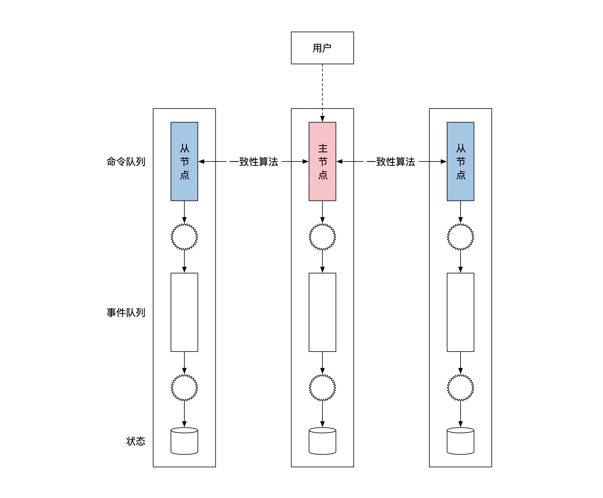
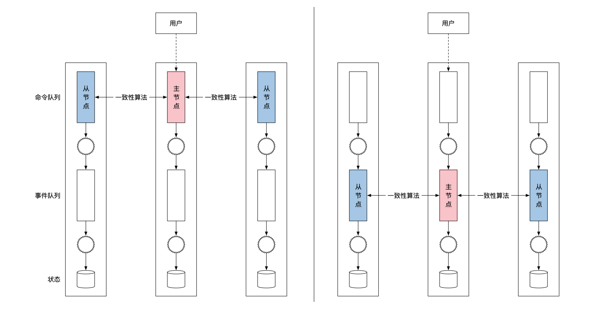
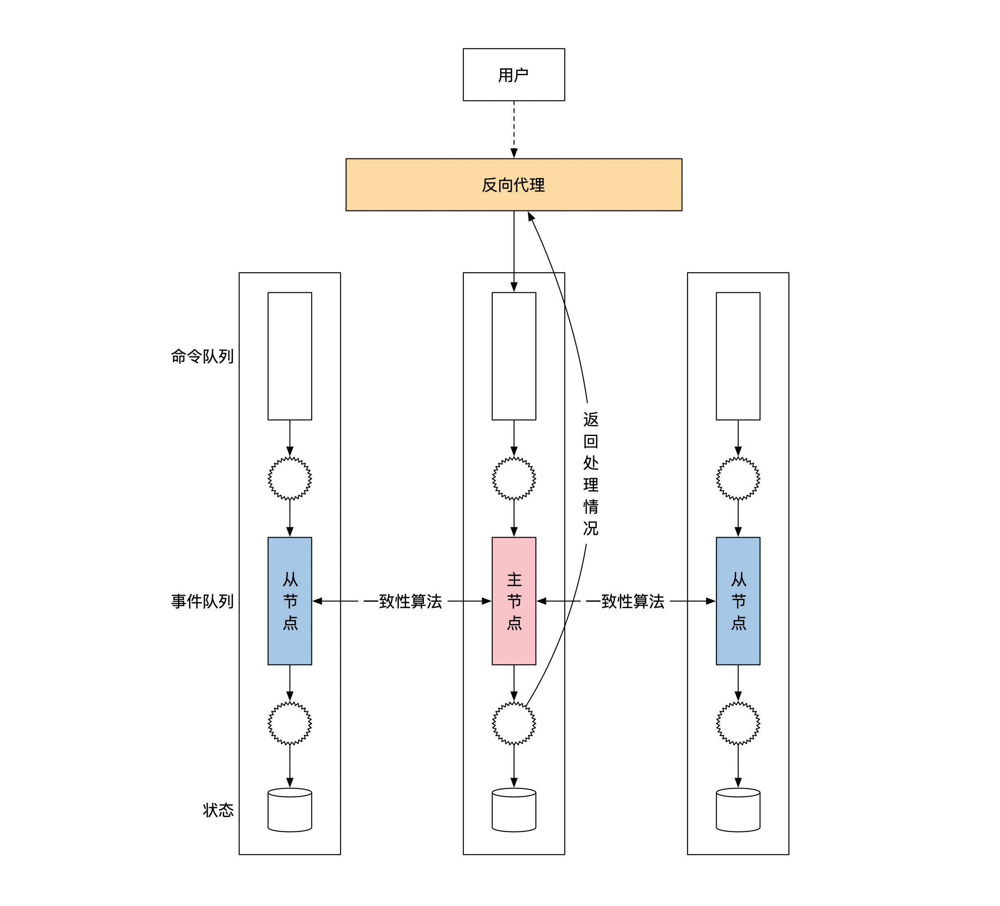
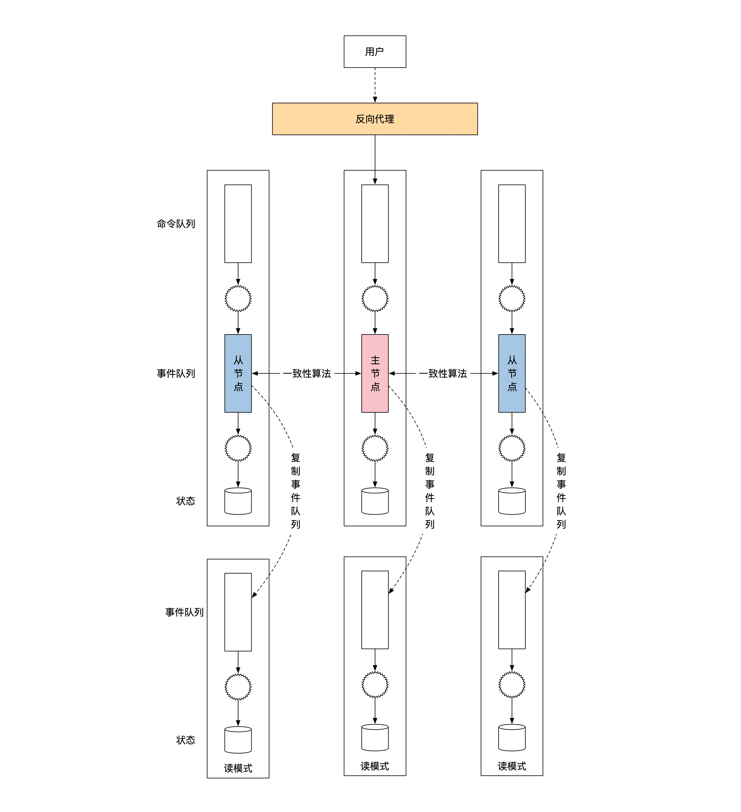
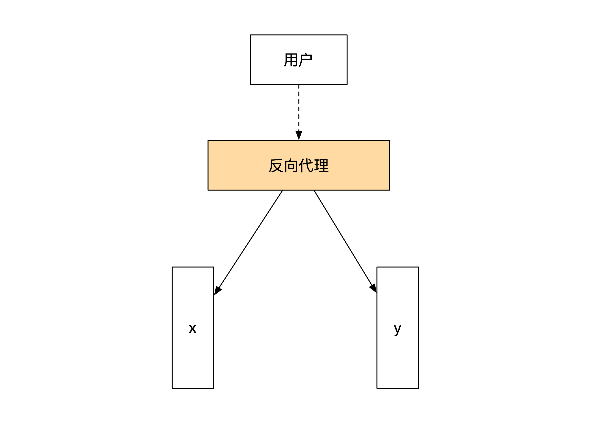
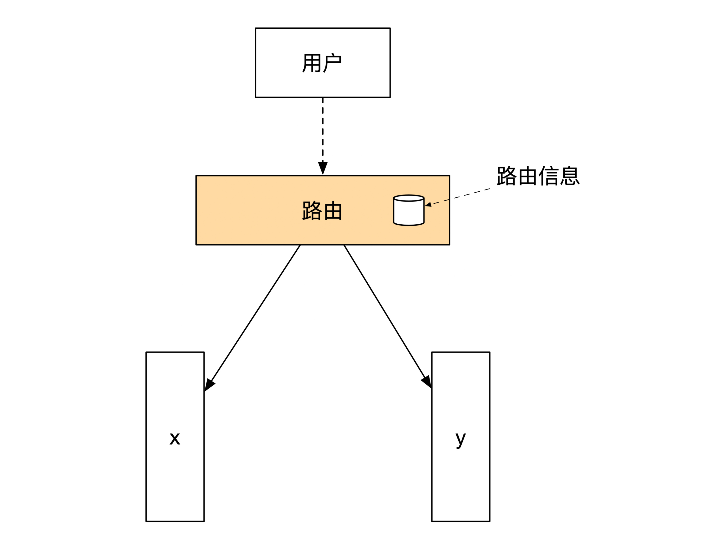
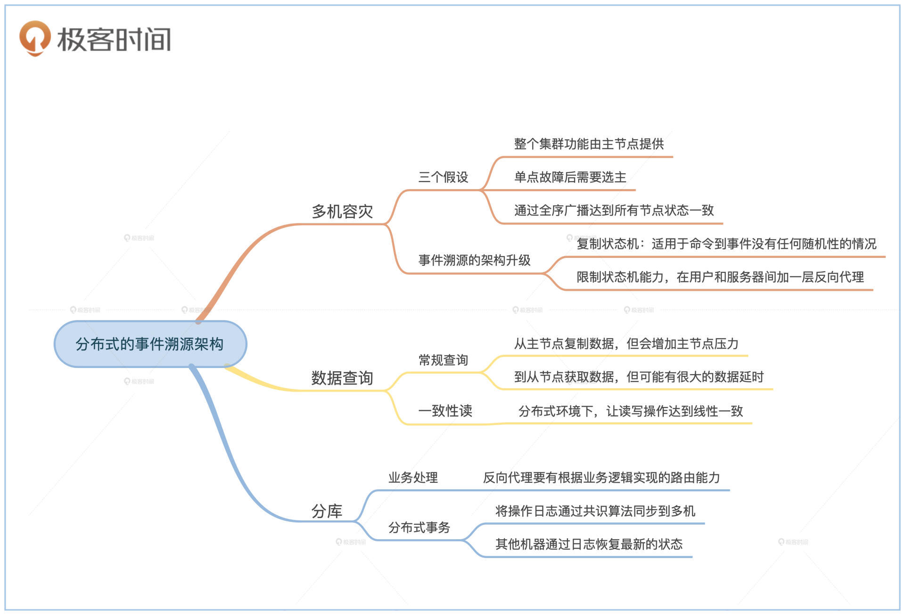

- 00 开篇词 如何成为金融级人才？.md.html
- 01 业务初探：扫了二维码之后发生了什么？.md.html
- 02 原理解读：如何理解第三方支付的业务逻辑和系统组件？.md.html
- 03 产品大观：不同金融业务都有哪些技术实现要点？.md.html
- 04 领域驱动设计（上）：如何设计金融软件顶层架构？.md.html
- 05 领域驱动设计（下）：如何设计统一的金融业务模型？.md.html
- 06 计算输入的正确性：怎么选择正确时间的数据？.md.html
- 07 计算过程的正确性：如何设计正确的数据处理架构？.md.html
- 08 计算结果的正确性：怎么保证计算结果是正确的？.md.html
- 09 数据传输的质量：金融业务对数据传输有什么要求？.md.html
- 10 数据存储的合理性：金融业务可以不用关系型数据库吗？.md.html
- 11 系统优化：如何让金融系统运行得更快？.md.html
- 12 正确性分级（上）：单机无备份有哪几种不同的一致性？.md.html
- 13 正确性分级（中）：多机无容灾有哪几种不同的一致性实现？.md.html
- 14 正确性分级（下）：多机有容灾有哪几种不同的一致性？.md.html
- 15 分布式正确性的存在性（上）：什么情况下不存在分布式共识算法？.md.html
- 16 分布式一致性（下）：怎么理解最简单的分布式一致性算法？.md.html
- 17 正确性案例（上）：如何实现分布式的事件溯源架构？.md.html
- 18 正确性案例（中）：常见分布式数据方案的设计原理是什么？.md.html
- 19 正确性案例（下）：如何在运行时进行数据系统的动态分库？.md.html
- 20 容灾（上）如何实现正确的跨机房实时容灾？.md.html
- 21 容灾（下）：如何通过混沌工程提高系统稳定性？.md.html
- 春节策划第1期 分布式金融系统知识，你掌握了多少？.md.html
- 春节策划第2期 读书如抽丝，为你推荐一些我读过的好书.md.html
- 春节策划第3期 如何运用架构知识解读春运买票和手游案例？.md.html
- 答疑集锦（一） 思考题解析与外汇架构知识拓展.md.html
- 答疑集锦（三） 思考题解析与数据库底层实现.md.html
- 答疑集锦（二） 思考题解析与账务系统优化.md.html
- 结束语 金融之道，与你同行，虽远尤欣.md.html
- 捐赠
17 正确性案例（上）：如何实现分布式的事件溯源架构？
你好，我是任杰。这一讲我想和你聊一聊怎么实现分布式的事件溯源架构。
在第7节课，我们讲了单机版的事件溯源架构。尽管这个架构处理能力快，但是单台机器的处理能力毕竟有限，而且也不能保证系统有容灾能力。
所以，这节课我们一起来看看，如何一步一步解决系统扩容和容灾的问题。这里我先做个提示，因为这节课会用到很多前面讲过的内容，必要的地方我会给你说明关联到前面哪一节课。我建议你先把握整体思路，有弄不懂的，可以再温习一下前面的内容。
这节课要讲的解决问题的思路，不仅仅适用于事件溯源架构，很多和计算及数据相关的系统也会碰到同样的挑战。所以，你在学习这节课时，重点要放在理解为什么会有这些问题，以及为什么有这些解决方案，而不是放在解决方案的细节上。
多机容灾
我们先来看看分布式环境下我们能解决的第一个问题，那就是容灾。
容灾的思路是花钱来换取服务质量。如果单台机器出问题之后无法对外提供服务，那么只要我们能把同一个功能部署在多台机器上就行，这些机器作为一个整体对外提供服务。如果一台机器坏掉了的话，只要集群里还有其他的机器，那么就能再找一台机器，替换掉前面那台坏掉的。
刚才的分析看似正确，但隐含着三个重要的假设。这几个假设会直接影响到我们的架构能达到的正确性级别。
我们先来分析一下这个思路里的假设。第一个问题是我们对正确性的描述很模糊。如果同一个功能可以由多台机器提供的话，那么就会出现在第14节课提到的单调读一致、单调写一致等各种弱一致性问题。
金融系统在分布式环境下，很多时候的要求会比较高，因此需要达到线性一致性的一致性级别。这时候常见的实现通常是整个集群的功能由一台机器来提供。这个特殊的机器就是主节点。
然后，我们来看看第二个假设。主节点是单台机器，因此会出现单点故障。当单点故障出现了之后，我们需要在剩下的机器里再找出一台机器来替换之前的主节点，所以这就是一个选主的过程。
再来看看第三个假设。我们不是简简单单地随便找一台机器来替换主节点。我们在这里有一个隐含的假设，那就是这个替换的机器是正确的，而且在主节点出问题后，它能够挺身而出，接手主节点之前所有的工作。更专业的说法是，我们希望替换节点和主节点完全一致。这个特点就是我们在第16节课提到的全序广播。
所以综合这三点假设，我们要求，在有线性一致性的情况下，容灾需要集群使用分布式一致性算法，这样就拥有了主节点，有换主过程，以及通过全序广播达到的所有节点状态一致。这就是为什么在对有状态机能力的系统进行容灾时，我们一定会选用一致性算法。
我们分析完了容灾的所有假设之后，再来看看为了支持容灾，我们需要对事件溯源架构做哪些修改？
一个很直接的修改方法是将事件溯源架构部署在多台机器上，通过一致性算法来复制命令队列，就像下面这幅图展示的一样。我们把这种部署方式叫作复制状态机（Replicated State Machine）。

这样做确实能对命令队列做多节点的容灾。但是又会出现一个问题。我们在讲事件溯源的时候提到过，命令变为事件的过程可以具有随机性。如果主节点出了问题，那么就算命令完全一样，新的主节点依然有可能生成不同的事件。所以上面这个方法，只适合从命令到事件的转变没有任何随机性的情况。
因此，为了保证事件溯源架构有全序广播的能力，我们需要用一致性算法来同步事件队列，而不是命令队列。下面这幅图的右边部分是正确的复制位置，你可以左右对比着看：

那架构升级到这里就结束了吗？其实还没有。
我们在第7节课学习单机版的事件溯源时，没有说过用户如何知道自己的消息已经被正确处理了。这是因为单机版的情况下，消息的处理和结果的返回都是由一台机器完成的，没有什么不确定的情况。
但是，等我们用到了事件溯源的复制状态机版本后，同一时间可能会有多台机器在处理同一个命令。那怎样才能保证用户能收到正确的处理结果呢？
这时候就需要对状态机的能力做一些限制了。我们要求只有在当前机器是主节点的情况下，这台机器才能对外进行通讯。如果机器是从节点，那么它只能复制事件队列和更新内部状态，而不能返回执行结果给用户。
因此，在复制状态机版本的事件溯源框架里，只有主节点可以往集群外写消息执行状态，比如通知处理结果给用户。那问题都解决了吗？其实还没有。
集群的主节点并不是一直是一台机器，有可能计算到一半的时候，主节点换到了另一台机器。这时候有一个很实际的问题是，用户和原来的主节点之间的网络链接，它在换主之后就断掉了。新的主节点怎样才能通知到原来的用户呢？
这时候就需要有一个中间层，用来隐藏事件溯源是由一组机器组成的这个细节。这个中间层的学名是反向代理。
反向代理是服务器集群的一部分。对于用户来说，反向代理就是集群服务器的代表。反向代理负责和用户之间维持TCP长链接，这样用户和反向代理之间可以一直互通消息。反向代理负责将用户请求转给合适的节点，并将节点的计算结果转还给用户。
下面这幅图给你展示了加了反向代理之后，分布式事件溯源架构是什么样子的：

数据查询
分布式环境下，我们要考虑的第二个问题就是数据查询。我会从常规查询和一致性读两个方面带你分析。
常规查询
我在第7节课给你讲过，如何实现事件溯源架构的查询，当时说过我们需要用到读写分离的架构。读写分离的架构要求我们实现一个读模式的状态机。那我们来看看在分布式情况下，读模式状态机应该如何实现。
读模式状态机的核心原理是复制写模式状态机内的事件队列，通过复制事件队列来达到复制状态的结果。因此我们需要做的是，从复制状态机版本的事件溯源框架里复制事件。那问题来了，这么多台机器都有事件队列，从哪台机器上复制会比较好呢？
答案很简单，从任何一台机器上复制都可以。这里就需要用到Raft一致性算法的一个特性，它能保证所有节点上的已同步数据都是正确的。每台机器可能同步的数据不一样多，但是只要数据被标记为已同步，那么数据就一定是正确的。
这样我们就很轻松地解决了第一个问题，那就是从哪里复制事件队列。这时候你有两种选择。一种是从主节点上复制数据。如果这样选择，你很有可能可以获取到最新的数据，但是问题在于这会加重主节点的压力。
为了避免主节点压力过高，我们就要说到另一种选择了，也就是到从节点上获取数据。因为从节点不需要处理命令，也不需要复制数据给其他节点，所以从节点压力比较小，多加一个数据访问不会有太大影响。但是从节点有一个问题是它可能会有很大的数据延时。如果从节点一直处在和主节点断开的状态，你就无法访问到更新的数据。
因此，你需要结合自己的情况来选择是从主节点还是从节点复制事件队列。下面这幅图给你展示了这两种不同的选择：

一致性读
刚才说的常规查询其实还不完善，因为通过读模式的方法实现的查询，可能会出现一些常见的分布式环境问题。我们在前面第14节课讲会话一致性的时候提到过，单个会话有单调读一致和自读自写这两个一致性级别。这两个级别在读模式的情况下都不能满足。那怎样才能保证读的正确性呢？
答案是要一致性读（Consistent Read）。一致性读解决问题的思路是在分布式环境下将读和写之间的操作进行排序，从而达到线性一致性。由于线性一致性比单调读一致和自读自写的一致性要高，所以也就解决了分布式环境下会话会出现的问题。
那具体应该怎么实现呢？过程分为两步。第一步是将查询发送给事件溯源的写节点。注意，这时候一定不要发给读模式的节点。
事件溯源需要命令和事件。对于查询请求来说，它的命令和事件什么事情都不做，因此是个空操作。我们需要的是，通过共识算法的线性一致性对查询请求进行正确的排序。
写节点处理完之后，我们就到了第二步。这时候写节点通过反向代理将查询结果返回给用户。你会发现一致性读和一般性的写过程完全一样，唯一变化是需要有特殊的命令和事件。
分库
业务处理
最后我们来看一下分布式事件溯源框架的分库处理。我会在第19节课给你讲解，如何做动态的分库，这里我们假设已经分库完毕，我们看看分库之后需要怎么处理。
为了方便你理解，我对架构和业务做了一些简化。接下来，我会用一个节点代表通过一致性算法实现容灾能力的多个节点。同时我们假设把一个节点分为了两个节点，各处理一半的情况。业务也选择了账务系统。
系统中一共有两个账号，分别是 x 和 y 。俗话说一生二，二生三，三生万物。如果我们能将节点一拆二，那么更多分库的情况我们也能够解决。下面这幅图展示了简化版的系统和业务情况：

那我们来看看，分库之后的事件溯源架构应该处理哪些问题。事件溯源要求读写分离，所以我们也按照这个思路，先看看写的情况下有哪些需要考虑的地方。
先看看反向代理。在没有分库之前，反向代理的作用是作为用户和系统之间的一个桥梁。系统内的节点虽然有多个，但是这些节点之间的状态是完全一致的。反向代理只需要找到正确的主节点就行。
在分库之后，系统会出现多个不同状态的节点。这时候每个节点只能处理一部分的业务，不能处理所有的业务。因此反向代理这时候需要有路由的能力，它能够根据业务逻辑来选择哪些消息应该送往哪些节点。
所以这时候反向代理需要变成路由，它的内部要维护全局的路由信息。更新后的架构图如下：

分布式事务
在分库之后，我们可能会遇到一个事务跨多个节点的问题。比如上面这个例子，如果发生了一笔从 x 到 y 的转账应该如何处理呢？
我在第13节课给你说过，这时候我们需要用分布式事务来解决跨节点的事务问题。常用的分布式事务实现方法2PC和TCC都需要用一个协调者来维护分布式事务的状态。这个协调者的作用非常重要，但是它是个单点，一台机器如果出问题，会导致所有分布式事务都无法进行下去。
在第13节课的时候，我们还没有足够多的理论基础来解决这个问题。不过，现在我们已经准备好了所有的工具。那让我们来看看，应该怎么解决协调者的容灾问题吧。
协调者的容灾和事件溯源架构的容灾一样，都需要用多台机器来解决单点问题，因此需要用到复制状态机，将单个节点的内容正确的复制到多台机器上。数据库没有命令或者和事件队列，但是一般会有操作日志。
所以，一种办法是将操作日志通过共识算法同步到多机，其他机器通过日志来恢复最新的状态。这就是一种常用的分布式数据库的实现方式。
小结
这节课我们学习了如何将单机版的事件溯源架构扩展到多机。
多机情况下，首先要解决的是单节点的容灾问题。我们需要用复制状态机来解决多节点的状态一致性问题，因此需要用共识算法来复制事件队列，用共识算法的全序广播能力实现复制状态机。
事件溯源的读写分离架构在分布式情况下改变不大。任何一个
节点都可以作为读模式节点的数据源。但是这个方案不能满足单调读一致和自读自写的要求。因此，我们可以选择对读操作进行跟写操作一样，通过共识算法同步到所有节点。这样，我们就能用共识算法的线性一致性，来达到会话中的读写顺序正确性了。
解决完单个节点的容灾问题之后，我们再通过分库分表解决扩容问题。分库分表要将反向代理升级为路由节点。分库之后的协调者本身也有单点问题，所以我们可以通过共识算法，把数据库的操作日志同步到多台机器上，这样就可以实现分布式数据库的容灾了。

思考题
不知道你还记不记得一首关于“推敲”的古诗：
题李凝幽居
贾岛- 闲居少邻并，草径入荒园。- 鸟宿池边树，僧敲月下门。- 过桥分野色，移石动云根。- 暂去还来此，幽期不负言。
传说作者贾岛在作诗的时候，对于是用“推”还是“敲”犹豫不决。我们在设计金融系统的时候，也会有类似的选择困难症。
比如说，读模式的状态机需要复制事件队列。在复制的时候一定有两个选择，一个是主动将事件队列拉过来，另一个是将事件队列推过来。那你会选择推，还是拉呢？你觉得不同选择都有哪些优缺点呢？
欢迎你在留言区分享你的思考和疑问。如果这节课对你有帮助，也欢迎转发给你的同事、朋友，跟他一起学习进步。
© 2019 - 2023 Liangliang Lee. Powered by gin and hexo-theme-book.